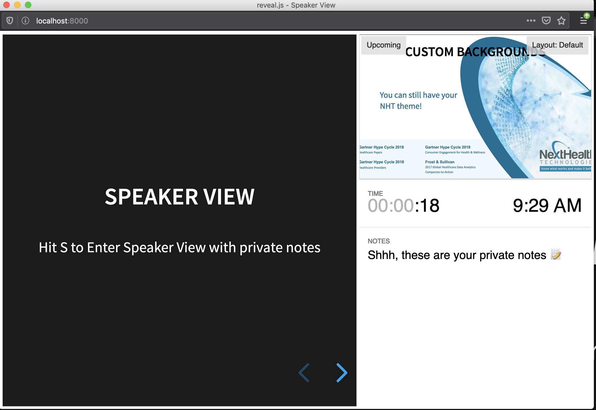

How I Made My Presentation
A.K.A. Why you should use reveal.js
Easy Setup
- Clone the reveal.js repository
- Open
index.htmlin a web browser to view your presentation
Full Setup
- Install Node.js version 10.0 or greater
- Clone the reveal.js repository
- Move to the directory and install via
npm install - Serve the presentation via
npm run - Open http://localhost:8000 to view your presentation
How do you edit the presentation?

The Basics
- Entire presentation can be in
index.html - The starting
index.htmlhas reveal.js baked in - Each slide is contained in a
<section>tag - Write your HTML and it will render!
- Many examples of reveal.js specific functionality online
Markdown is supported too!
*limited knowledge on my part here thoughWhat features do you get?
Code Highlighting
Markdown is supported too!
*limited knowledge on my part here though
What features do you get?
LaTeX Style Math
\[\begin{equation} P(x_{i}\mid y) = \frac{1}{\sqrt{2\pi \sigma_y^{2}}} \exp \left(-\frac{(x_{i} -\mu_{y})^2}{2\sigma_y^{2}} \right) \end{equation} \]*The equation is Gaussian Naïve Bayes, for those who are curious
**Oh, and fade in/out slide fragments are supported too!
Vertical Slides
Not just left and right
Overview Mode
Hit O or ESC for a visual overview of your slides
Speaker View
Hit S to Enter Speaker View with private notes 
Custom Backgrounds
You can still have your
NHT theme!
And the most important feature...
GIFS!!!

Videos are supported too!
How do you share presentations?
Export to PDF is supported
(but no gifs)Host on GitHub Pages
- Create a new empty repository
- Commit the presentation to the
gh-pagesbranch - The presentation should now be available at yourname.github.io/repo-name